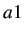
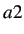
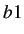
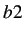
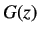
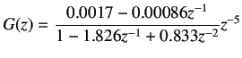

Next: Implementing 2DOF pole-placement controller Up: PRBS Modeling and Implementation Previous: Determination of First order
|
The results presented are obtained for the data file prbs-data-virtual.txt. This data file is present under the prbs directory for virtual experiments.The plot thus obtained is reasonably good. See the Scilab plot to get the values of , ,  and . The figure 7.8 shows a screen shot of the same. We obtain = -1.82, = 0.833, = 0.0017, = -0.00086, . The transfer function obtained here is at the operating point of 50 percentage of heat. If the experiment is repeated at a different operating point, the transfer function obtained will be different. The gain will correspondingly be more at a higher operating point. This means that the plant is faster at higher temperature. Thus the transfer function of the plant varies with the operating point. Let the transfer function we obtain in this experiment be denoted as . We obtain
| |
|  | (7.5) |
rokade 2017-04-23